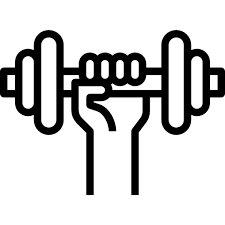

-
.jpg)
.png)

Academia Primeiro passos
Por onde começar na academia pode ser uma pergunta comum para quem está ingressando nessa jornada de condicionamento físico onde a maioria se sente desmotivada e com medo de se machucar ou se manter motivado(a). Aqui estão algumas dicas para ajudá-lo a dar o pontapé inicial na sua nova vida saudavel:
Defina seus objetivos: Antes de tudo, estabeleça seus objetivos de forma clara e específica. Quer perder peso, ganhar massa muscular, melhorar a resistência ou simplesmente se sentir mais saudável e ativo? Ter objetivos claros ajudará a direcionar seus esforços e acompanhar seu progresso ao longo do tempo.
Consulte um profissional: Considere a possibilidade de buscar orientação de um profissional qualificado, como um personal trainer. Eles podem avaliar seu estado atual de condicionamento físico, ajudá-lo a estabelecer metas realistas e criar um programa de treinamento adequado às suas necessidades e objetivos.
Comece com exercícios básicos: Se você é um iniciante na academia, é recomendado começar com exercícios básicos e fundamentais. Agachamentos, flexões, levantamento terra, supino e remada são exemplos de exercícios que trabalham vários grupos musculares ao mesmo tempo e proporcionam uma base sólida para seu treinamento.
Aprenda a técnica correta: Antes de aumentar a intensidade dos exercícios, concentre-se em aprender a técnica adequada. Isso não apenas maximizará os benefícios do treino, mas também reduzirá o risco de lesões. Peça orientação a um profissional ou busque recursos confiáveis para aprender as técnicas corretas de execução dos exercícios.
Construa progressivamente: À medida que ganha confiança e força, aumente gradualmente a intensidade e a carga dos exercícios. Isso pode ser feito aumentando o peso utilizado, o número de repetições ou o número de séries. A progressão gradual ajudará a evitar lesões e estimulará o crescimento e o desenvolvimento muscular.
Misture os tipos de treino: Não se limite apenas aos exercícios de musculação. Inclua também exercícios cardiovasculares, como corrida, natação ou ciclismo, para melhorar sua resistência cardiovascular. Além disso, experimente aulas coletivas ou treinamentos funcionais para adicionar variedade e diversão à sua rotina de treino.
Cuide da recuperação: Lembre-se de que a recuperação é tão importante quanto o treinamento em si. Dê ao seu corpo tempo para descansar e se recuperar adequadamente entre os treinos. Isso inclui dormir o suficiente, manter uma alimentação equilibrada e fornecer nutrientes adequados ao seu corpo.
Aproveite a jornada: Por fim, lembre-se de que a jornada na academia é um processo contínuo. Não se compare com os outros e não espere resultados imediatos. Aproveite cada etapa do caminho, celebre suas conquistas e seja paciente consigo mesmo.
Lembre-se de que a consistência é a chave para alcançar resultados duradouros. Mantenha-se comprometido, estabeleça metas realistas e encontre prazer na sua jornada de condicionamento físico. Com o tempo, você colherá os benefícios de um estilo de vida ativo e saudável.